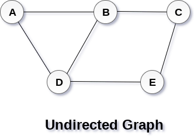

Graph
A graph can be defined as group of vertices and edges that are used to connect these vertices. A graph can be seen as a cyclic tree, where the vertices (Nodes) maintain any complex relationship among them instead of having parent child relationship.
Definition
A graph G can be defined as an ordered set G(V, E) where V(G) represents the set of vertices and E(G) represents the set of edges which are used to connect these vertices.
A Graph G(V, E) with 5 vertices (A, B, C, D, E) and six edges ((A,B), (B,C), (C,E), (E,D), (D,B), (D,A)) is shown in the following figure.

Directed and Undirected Graph
A graph can be directed or undirected. However, in an undirected graph, edges are not associated with the directions with them. An undirected graph is shown in the above figure since its edges are not attached with any of the directions. If an edge exists between vertex A and B then the vertices can be traversed from B to A as well as A to B.
In a directed graph, edges form an ordered pair. Edges represent a specific path from some vertex A to another vertex B. Node A is called initial node while node B is called terminal node.
A directed graph is shown in the following figure.

Graph Terminology
Path
A path can be defined as the sequence of nodes that are followed in order to reach some terminal node V from the initial node U.
Closed Path
A path will be called as closed path if the initial node is same as terminal node. A path will be closed path if V0=VN.
Simple Path
If all the nodes of the graph are distinct with an exception V0=VN, then such path P is called as closed simple path.
Cycle
A cycle can be defined as the path which has no repeated edges or vertices except the first and last vertices.
Connected Graph
A connected graph is the one in which some path exists between every two vertices (u, v) in V. There are no isolated nodes in connected graph.
Complete Graph
A complete graph is the one in which every node is connected with all other nodes. A complete graph contain n(n-1)/2 edges where n is the number of nodes in the graph.
Weighted Graph
In a weighted graph, each edge is assigned with some data such as length or weight. The weight of an edge e can be given as w(e) which must be a positive (+) value indicating the cost of traversing the edge.
Digraph
A digraph is a directed graph in which each edge of the graph is associated with some direction and the traversing can be done only in the specified direction.
Loop
An edge that is associated with the similar end points can be called as Loop.
Adjacent Nodes
If two nodes u and v are connected via an edge e, then the nodes u and v are called as neighbours or adjacent nodes.
Degree of the Node
A degree of a node is the number of edges that are connected with that node. A node with degree 0 is called as isolated node.
Breadth First Algorithm in Graph
In this article, we will discuss the BFS algorithm in the data structure. Breadth-first search is a graph traversal algorithm that starts traversing the graph from the root node and explores all the neighboring nodes. Then, it selects the nearest node and explores all the unexplored nodes. While using BFS for traversal, any node in the graph can be considered as the root node.
There are many ways to traverse the graph, but among them, BFS is the most commonly used approach. It is a recursive algorithm to search all the vertices of a tree or graph data structure. BFS puts every vertex of the graph into two categories - visited and non-visited. It selects a single node in a graph and, after that, visits all the nodes adjacent to the selected node.
Applications of BFS algorithm
The applications of breadth-first-algorithm are given as follows -
- BFS can be used to find the neighboring locations from a given source location.
- In a peer-to-peer network, BFS algorithm can be used as a traversal method to find all the neighboring nodes. Most torrent clients, such as BitTorrent, uTorrent, etc. employ this process to find "seeds" and "peers" in the network.
- BFS can be used in web crawlers to create web page indexes. It is one of the main algorithms that can be used to index web pages. It starts traversing from the source page and follows the links associated with the page. Here, every web page is considered as a node in the graph.
- BFS is used to determine the shortest path and minimum spanning tree.
Algorithm
The steps involved in the BFS algorithm to explore a graph are given as follows -
- Step 1: SET STATUS = 1 (ready state) for each node in G
- Step 2:Enqueue the starting node A and set its STATUS = 2 (waiting state)
- Step 3: Repeat Steps 4 and 5 until QUEUE is empty
- Step 4:Dequeue a node N. Process it and set its STATUS = 3 (processed state).
- Step 5: Enqueue all the neighbours of N that are in the ready state (whose STATUS = 1) and set
their STATUS = 2
(waiting state)
[END OF LOOP]
- Step 6: EXIT
Example of BFS

Depth First Search Algorithm in Graph
In this article, we will discuss the DFS algorithm in the data structure. It is a recursive algorithm to search all the vertices of a tree data structure or a graph. The depth-first search (DFS) algorithm starts with the initial node of graph G and goes deeper until we find the goal node or the node with no children.
Because of the recursive nature, stack data structure can be used to implement the DFS algorithm. The process of implementing the DFS is similar to the BFS algorithm.
The step by step process to implement the DFS traversal is given as follows -
- First, create a stack with the total number of vertices in the graph.
- Now, choose any vertex as the starting point of traversal, and push that vertex into the stack.
- After that, push a non-visited vertex (adjacent to the vertex on the top of the stack) to the top of the stack.
- Now, repeat steps 3 and 4 until no vertices are left to visit from the vertex on the stack's top.
- If no vertex is left, go back and pop a vertex from the stack.
- Repeat steps 2, 3, and 4 until the stack is empty.
Applications of DFS algorithm
The applications of using the DFS algorithm are given as follows -
- DFS algorithm can be used to implement the topological sorting.
- It can be used to find the paths between two vertices.
- It can also be used to detect cycles in the graph
- DFS algorithm is also used for one solution puzzles.
- DFS is used to determine if a graph is bipartite or not.